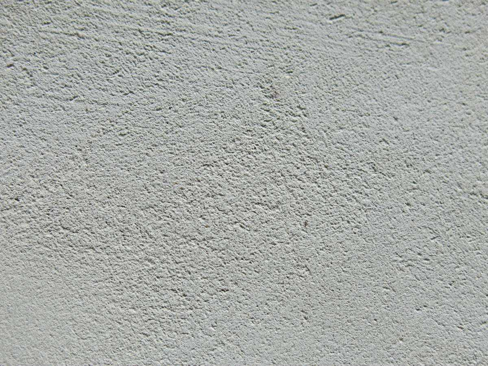

Il nostro consiglio: MICRODECK
Microdeck è il microcemento più adatto per pavimenti di interni data la sua ottima resistenza al calpestio elevato e alla sua grande resistenza e durezza a usura, urti, graffi, ecc. Inoltre, consente di creare spazi continui senza giunti, facili da pulire e mantenere.
Microdeck è così versatile da poter essere applicato anche su scale, pareti, piatti doccia, lavandini, piani da lavoro, facciate e terrazze.
Microdeck conferisce agli ambienti un aspetto molto naturale ed
elegante. Grazie alla sua texture a grana media, l’effetto nuvolato è minore.
È facile da combinare con altri materiali. Ti consigliamo parquet in legno naturale o maioliche antiche.
Vedrai che tocco personale e moderno otterrai!
Sul piano estetico è simile al cemento lucidato, ma NON è la stessa cosa.
Il microcemento offre più vantaggi:

Il nostro consiglio: MICROFINO
Microfino è il microcemento più consigliato per le pareti. È pensato unicamente per
superfici verticali e non calpestabili. Lo sconsigliamo per altri usi perché è meno resistente e duro
rispetto agli altri microcementi.
È una finitura molto gradevole, setosa e morbida al tatto grazie alla texture a grana sottile. Crea un effetto nuvolato molto caratteristico e richiesto sul materiale.
Sul piano estetico è simile allo stucco veneziano, ma NON è la stessa cosa.
Con il microcemento si ottengono altri vantaggi:
Un altro consiglio: MICRODECK
Anche Microdeck può essere applicato sulle pareti grazie alla sua grande versatilità.
Con Microdeck otterrai una finitura più omogenea e uniforme rispetto a Microfino, ma altrettanto liscia e setosa.

Il nostro consiglio: MICROSTONE
Microstone è il microcemento più adatto per esterni grazie alle sue proprietà antiscivolo
e agli alti livelli di resistenza. Di solito è applicato su terrazze, patii e facciate.
La sua texture ricorda l’aspetto della pietra, per via della sua grana grossa. A seconda del pigmento scelto si possono ottenere risultati sorprendenti. Ad esempio, se optiamo per il colore pizarra (ardesia), otterremo un effetto roccia vulcanica che non passerà di certo inosservato.

Il nostro consiglio: MICROBASE
Microbase, il microcemento di preparazione detto anche microcemento
rustico, è il più indicato per ottenere questo tipo di effetto grazie alla sua texture
caratteristica.
Microbase è adatto a due impieghi o applicazioni: come base e come
finitura. Viene utilizzato principalmente come base per preparare la superficie di lavoro, copre la
rete di fibra di vetro e conferisce durezza al rivestimento per consentire quindi l’applicazione dei
microcementi di finitura Microfino, Microdeck o Microstone. Non funge da autolivellante nè da
riempitivo, pertanto non può essere utilizzato per questi scopi.
Se applichiamo Microbase come finitura, otterremo un ambiente dall’aspetto rustico e dalla texture irregolare e artigianale. È possibile creare ambienti sorprendenti e piacevoli giocando con la sua texture, sia sui pavimenti che sulle pareti.

Il nostro consiglio: AQUACIMENT
Aquaciment è il microcemento maggiormente consigliato per rivestire superfici a contatto permanente con l’acqua, come piscine, laghetti o fontane, sia di nuova costruzione che ristrutturati. Consente di ottenere superfici senza soluzione di continuità e senza giunti. Continua a indurirsi a contatto con l’acqua. Sebbene non sia necessaria alcuna vernice di finitura per garantirne la resistenza, si consiglia l’applicazione di tale vernice per facilitare la pulizia e la manutenzione successiva.
È disponibile in tre grane differenti:
Aquaciment si può realizzare in qualsiasi colore, non esistono limiti. Il vantaggio
principale consiste nella possibilità di realizzare linee di demarcazione o disegni in diversi colori,
nonché inserti di materiali diversi come piastrelle, stemmi, emblemi, ecc. La tua piscina completamente
personalizzata!
Il microcemento può essere applicato sia sulle pareti che sui pavimenti in cucina, come valida alternativa alle piastrelle, essendo un materiale privo di giunti e quindi più facile da pulire; tuttavia, a causa della sua composizione ricca di resine, questo materiale non è adatto al contatto diretto con fonti di calore come padelle e pentole appena tolte dal fuoco, pertanto l’uso su piani da lavoro per la cucina è sconsigliato e a rischio del cliente.
Consigliamo sempre di applicare la rete in fibra di vetro, soprattutto su pareti e pavimenti con piastrelle, nonché sui giunti tra lastre di cartongesso. Negli altri casi, per rinforzare il microcemento di base e prevenire fessure dovute alle sollecitazioni del supporto del microcemento, la decisione finale in merito alla sua applicazione almeno spetterà, ovviamente, all’applicatore. Nel caso in cui decida di non impiegarla, l’applicatore dovrebbe avvertire il cliente dei problemi che potrebbero sorgere.
Questi dipenderanno dalle condizioni climatiche, dall’umidità relativa, dalla temperatura ambiente del locale, dalla sua eventuale esposizione diretta al sole, dal fatto che si tratti o meno di uno spazio chiuso e umido come un bagno, ecc. Tuttavia cercheremo di attendere il più possibile per evitare che si formino macchie bianche dovute all’umidità di un primo strato di sigillante non ancora del tutto asciutto.
Accortezze iniziali
Il Microcemento raggiunge i suoi livelli definitivi di durezza, resistenza chimica e tenuta un
mese dopo la sua applicazione.
Durante le prime due settimane è più alto il rischio di danneggiarlo.
È possibile calpestarlo, facendo molta attenzione, già due giorni dopo averlo sigillato e dopo
una settimana è possibile calpestarlo normalmente.
Mantenimento quotidiano
La pulizia va eseguita con sapone neutro, non utilizziamo mai prodotti aggressivi o anticalcare.
Evitiamo di lasciare il microcemento in contatto prolungato con il sapone. Prodotti alcalini
come il cloro, la candeggina, l’ammoniaca, i saponi e i detergenti in genere, danneggiano la
pellicola protettiva del microcemento.
Le accortezze che dobbiamo tenere sono le stesse che avremmo con un parquet di legno. È
importante anche evitare residui d’acqua e il contatto prolungato con acqua e umidità. Per
questo motivo, bisogna evitare di lasciare tappeti o asciugamani bagnati sul pavimento o vasi
che perdano liquido. Infine. Facciamo attenzione a ripulire le superfici da eventuali resti di
sabbia o ghiaia che al calpestarli possano graffiare il pavimento la sabbia e polvere in eccesso
sono fattori di erosione. Per quanto possibile è meglio avere un zerbino nella porta di acceso
della casa
Evitiamo di trascinare oggetti pesanti sulle superfici in microcemento. Se dobbiamo spostare
mobili, per esempio, solleviamoli e appoggiamoli. Per proteggere il pavimento, consigliamo
sempre di apporre feltri adesivi al mobiliario (alle gambe metalliche di un tavolo per esempio),
e agli oggetti con superfici di contatto abrasive o particolarmente pesanti. Evitiamo di dare
colpi o di urtare le superfici con oggetti duri. Le ruote dei mobili devono essere di gomma
soffice poiché sono meno aggressive di quelle di plastica.
A maggiore resistenza allo scivolamento, più complicata da pulire è la superficie dovuto al
texturado, per quello che è importante stimare prima le necessità antiscivolo del pavimento.
Microdeck è appropriato per la maggioranza dei casi nei che la normativa esige, come
massimo, classe1. Raccomandiamo Microstone in esterno, poiché può pulirsi con una canna di
acqua a pressione
Mantenimento periodico
Raccomandiamo di trattare periodicamente i pavimenti in microcemento con cere acriliche
che lasciano un residuo acrilico che rinnova la cappa di protezione del pavimento. Non è
necessario nessun tipo di macchina concreta. Tutti questi procedimenti possono realizzarsi
mediante mopa o sguattera. La frequenza dipenderà dall’uso e dalle caratteristiche dello
spazio (transito, polvere, ecc..).